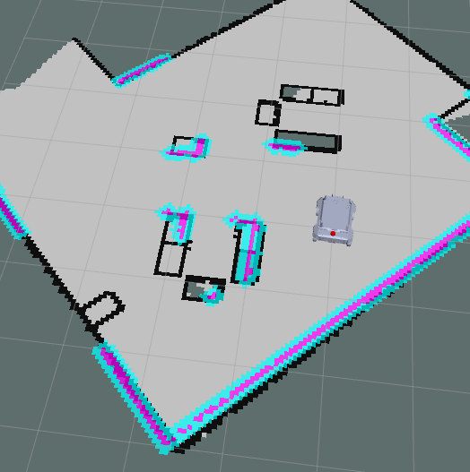
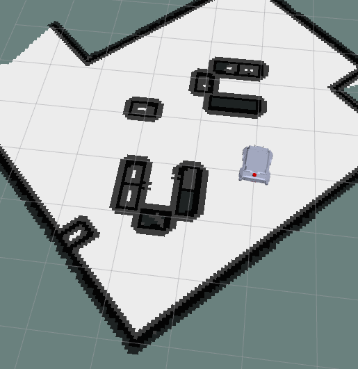

Components of Nav2
1. Costmaps
-
Cost map is a grid in which every cell gets assigned a value (cost) determining distance to obstacle, where higher value means closer distance.
-
Using this map, the robot plans the path in such a way that it avoids obtsacles by creating a trajectory with lowest cost.
-
There are 2 costmaps, one for local planner which determines obtsacles near the robot and the other one for global planner to plan a global path from the start point to the goal with keeping the obstacles in mind.
1.1 Local Costmap
- These are the parameters used by a local cost map in
nav2_parma.yamlin dir/ebot_nav2/params/.
local_costmap:
local_costmap:
ros__parameters:
update_frequency: 5.0
publish_frequency: 2.0
global_frame: odom
robot_base_frame: "base_footprint"
use_sim_time: True
rolling_window: true
width: 3
height: 3
resolution: 0.05
footprint: "[ [0.21, 0.195], [0.21, -0.195], [-0.21, -0.195], [-0.21, 0.195] ]"
plugins: ["voxel_layer", "inflation_layer"]
inflation_layer:
plugin: "nav2_costmap_2d::InflationLayer"
cost_scaling_factor: 3.0
inflation_radius: 0.55
voxel_layer:
plugin: "nav2_costmap_2d::VoxelLayer"
enabled: True
publish_voxel_map: True
origin_z: 0.0
z_resolution: 0.05
z_voxels: 16
max_obstacle_height: 2.0
mark_threshold: 0
observation_sources: scan
scan:
topic: /scan
max_obstacle_height: 2.0
clearing: True
marking: True
data_type: "LaserScan"
raytrace_max_range: 3.0
raytrace_min_range: 0.0
obstacle_max_range: 2.5
obstacle_min_range: 0.0
static_layer:
map_subscribe_transient_local: True
always_send_full_costmap: True
local_costmap_client:
ros__parameters:
use_sim_time: True
local_costmap_rclcpp_node:
ros__parameters:
use_sim_time: True

1.2 Global Costmap
- These are the parameters used by a global cost map in
nav2_parma.yamlin dir/ebot_nav2/params/.
global_costmap:
global_costmap:
ros__parameters:
update_frequency: 1.0
publish_frequency: 1.0
global_frame: map
robot_base_frame: "base_footprint"
use_sim_time: True
robot_radius: 0.3
resolution: 0.05
track_unknown_space: true
plugins: ["static_layer", "obstacle_layer", "inflation_layer"]
obstacle_layer:
plugin: "nav2_costmap_2d::ObstacleLayer"
enabled: True
observation_sources: scan
scan:
topic: /scan
max_obstacle_height: 2.0
clearing: True
marking: True
data_type: "LaserScan"
raytrace_max_range: 3.0
raytrace_min_range: 0.0
obstacle_max_range: 2.5
obstacle_min_range: 0.0
static_layer:
plugin: "nav2_costmap_2d::StaticLayer"
map_subscribe_transient_local: True
inflation_layer:
plugin: "nav2_costmap_2d::InflationLayer"
cost_scaling_factor: 3.0
inflation_radius: 0.55
always_send_full_costmap: True
global_costmap_client:
ros__parameters:
use_sim_time: True
global_costmap_rclcpp_node:
ros__parameters:
use_sim_time: True

2 Planner
- There are 2 types of planners in the Navigation stack:
- Local Planner - Global planner plans the path from the start to the end goal.
- Global Planner - Local planner is used to avoid obstacles and get the robot back to the global path after avoiding obstacles.
2.1 Local Path Planner
-
The purpose of local planner is to find a suitable local plan at every instance.
-
There are various local planners that are used. We will be using the dwa local planner.
-
Using a map, the planner creates a kinematic trajectory for the robot to get from a start to a goal location.
-
Along the way, the planner creates, at least locally around the robot, a value function, represented as a grid map.
-
This value function encodes the costs of traversing through the grid cells. The controller's job is to use this value function to determine dx,dy,dtheta velocities to send to the robot.
-
The basic idea of the Dynamic Window Approach (DWA) algorithm is as follows:
- Discretely sample in the robot's control space (dx,dy,dtheta)
- For each sampled velocity, perform forward simulation from the robot's current state to predict what would happen if the sampled velocity were applied for some (short) period of time.
- Evaluate the cost of each trajectory resulting from the forward simulation, using a metric that incorporates characteristics such as: distance to obstacles, distance to the goal, distance to the global path, and speed. Discard the trajectories those that collide with obstacles.
- Pick the minimum cost trajectory and send the associated velocity to the mobile base.
- Rinse and repeat.

2.2 Global Path Planner
-
The purpose of global path planner is to plan the shortest path which avoids all the obstacle from the start point to the goal point.
-
There are a lot of various path planers used such as Djiktstras, D star, potential field but the one we are gonna focus on is A*
-
A star is a grid-based algorithm. It uses the global costmap provided to find the fastest path to the goal point without hitting any obstacle

- These are the parameters related to planner in
nav2_parma.yamlin dir/ebot_nav2/params/.
planner_server:
ros__parameters:
expected_planner_frequency: 20.0
use_sim_time: True
planner_plugins: ["GridBased"]
GridBased:
plugin: "nav2_navfn_planner/NavfnPlanner"
tolerance: 0.5
use_astar: false
allow_unknown: true
planner_server_rclcpp_node:
ros__parameters:
use_sim_time: True
Controller Server
The Dynamics of the bot are controller using this, so this one is very important
- These are the parameters related to Control Server in
nav2_parma.yamlin dir/ebot_nav2/params/.
controller_server:
ros__parameters:
use_sim_time: True
controller_frequency: 20.0
min_x_velocity_threshold: 0.001
min_y_velocity_threshold: 0.5
min_theta_velocity_threshold: 0.001
failure_tolerance: 0.3
odom_topic : "/odometry/filtered"
progress_checker_plugin: "progress_checker"
goal_checker_plugins: ["general_goal_checker"] # "precise_goal_checker"
controller_plugins: ["FollowPath"]
# Progress checker parameters
progress_checker:
plugin: "nav2_controller::SimpleProgressChecker"
required_movement_radius: 0.5
movement_time_allowance: 10.0
general_goal_checker:
stateful: True
plugin: "nav2_controller::SimpleGoalChecker"
xy_goal_tolerance: 0.25
yaw_goal_tolerance: 0.25
# DWB parameters
FollowPath:
plugin: "dwb_core::DWBLocalPlanner"
debug_trajectory_details: True
min_vel_x: 0.0
min_vel_y: 0.0
max_vel_x: 0.26
max_vel_y: 0.0
max_vel_theta: 1.0
min_speed_xy: 0.0
max_speed_xy: 0.26
min_speed_theta: 0.0
acc_lim_x: 2.5
acc_lim_y: 0.0
acc_lim_theta: 3.2
decel_lim_x: -2.5
decel_lim_y: 0.0
decel_lim_theta: -3.2
vx_samples: 20
vy_samples: 5
vtheta_samples: 20
sim_time: 1.7
linear_granularity: 0.05
angular_granularity: 0.025
transform_tolerance: 0.2
xy_goal_tolerance: 0.25
trans_stopped_velocity: 0.25
short_circuit_trajectory_evaluation: True
stateful: True
critics: ["RotateToGoal", "Oscillation", "BaseObstacle", "GoalAlign", "PathAlign", "PathDist", "GoalDist"]
BaseObstacle.scale: 0.02
PathAlign.scale: 32.0
PathAlign.forward_point_distance: 0.1
GoalAlign.scale: 24.0
GoalAlign.forward_point_distance: 0.1
PathDist.scale: 32.0
GoalDist.scale: 24.0
RotateToGoal.scale: 32.0
RotateToGoal.slowing_factor: 5.0
RotateToGoal.lookahead_time: -1.0
controller_server_rclcpp_node:
ros__parameters:
use_sim_time: True
To tune all this parameters, here is the brief guide